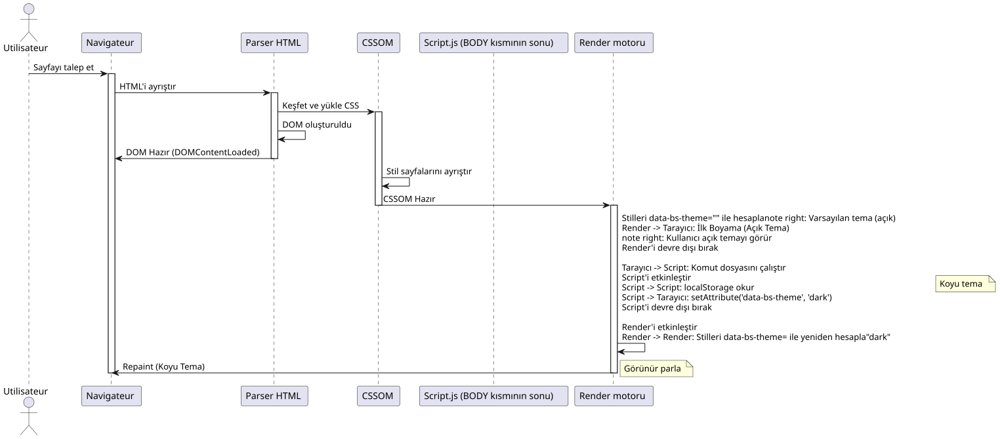

Ön Yükleme Sanatı : JavaScript ve CSS ile tema "Flash"'ı kaldırma
Yayınlandı: 15 November 2025
Özet
Bu kapsamlı teknik makalede, sayfa yüklenirken ortaya çıkan rahatsızlayıcı titreşim etkisinden kaçınarak bir tema seçici (light/dark) nasıl uygulanacağı inceleniyor. Tarayıcı işleme döngüsü ayrıntılı olarak analiz edilmektedir, FOUC (Flash of Unstyled Content)’nin temel nedenleri belirlenmiş ve senkron önceden yükleme yöntemine dayalı sağlam bir çözüm önerilmektedir içinde`<head>`. Bu teknik, kullanıcı deneyimini akıcı ve profesyonel bir şekilde sağlar.
Sorun: Bu Lanet Tema Titremesi
Kullanıcı deneyimi için bir korku rüyası
Sahneyi hayal edin: web uygulamanız için harika bir koyu tema tasarlamak için saatler harcadınız. Renkler mükemmel şekilde dengeli, kontrast optimal ve kullanıcılar bu seçeneği seviyor. Ancak embarrassed bir sorun var: her sayfa yenilemesi sırasında, bir saniyenin bir fraksiyonu boyunca varsayılan açık tema gösterilir, ardından koyu tema devreye girer.
Bu görsel "flash", kısa olsa da (bazen 100 milisaniyeden daha az), insan gözü tarafından hemen fark edilir ve rahatsız edici bir deneyim oluşturur. Görsel konfor veya erişilebilirlik nedeniyle karanlık tema seçen kullanıcılar için bu parlama hatta acı verici olabilir, özellikle aydınlatması az ortamlarda.
FOUC : Bir Eski Web Problemi
Bu fenomen, web geliştirmedeki bir klasik sorun olan "Flash of Unstyled Content" (FOUC) olarak adlandırılan şeyin bir varyantıdır; bu problem CSS’nin ilk günlerinden beri tarihini yapar. FOUC, tarayıcı HTML içeriğini geçici olarak CSS stillerinin uygulanmadığı şekilde görüntülediğinde oluşur ve bu da stilini olmayan içerikte bir flaş oluşturur.
Özel durumumuzda, tamamen stil içermeyen bir içerik hakkında konuşmuyoruz, aksine birYanlış tema flaşı(FOWT) - içerik stilize edilmiş, fakat yanlış temayla. Özellikle sinir bozucu, bunun gösterdiği ki bizim uygulamamız \"unutturuyor\" kullanıcının tercihini her sayfa yüklenmesinde.
Kalite Algısı Üzerindeki Etki
Bu sorun teknik olsa da, uygulamanızın kalite algısında önemli etkileri yapar:
Parlaklığı eksikParlama, uygulamanın tamamlanmamış veya iyileştirilmemiş olduğu izlenimi verir. Kullanıcılar bu küçük görsel hataları genellikle genel bir profesyonellik eksikliğiyle ilişkilendirir.
Koherens bozulması: Uygulama kullanıcının tercihlerini 'unutuyormuş gibi görünüyor', bu da arayüz ve beklentiler arasında bir senkronizasyon eksikliği hissi yaratıyor.
Görsel yorgunlukIşığa hassas olan veya migrenli kullanıcılar için bu parlak ışık, sadece görsel bir rahatsızlıktan daha fazlası olabilir.
Algılanan performansIronik olarak, web siteniz hızlı yüklenese de, bu titreme yavaş veya tepkisiz gibi bir uygulama izlenimi verebilir.
Problemin Teknik Analizi
Bu sorunu çözmek için, önce neden oluştuğunu anlamamız gerekir. Sayfa yaşam döngüsündeki üç kritik olay arasındaki zaman gecikmesi nedeniyle parlama oluşur :
-
İlk HTML ayrıştırmaTarayıcı sayfanızın yapısını okur ve analiz eder.
-
CSS stillerinin uygulanmasıTarayıcı CSS kurallarını uygular ve görsel çıktıyı hesaplar.
-
JavaScript’in yürütülmesiTemanızı değiştiren kodunuz çalıştırılıyor.
Probleme, tarayıcı zaten #2 olayı (stilloların uygulanması) başladı veya tamamladıktan sonra #3 olayının (JavaScript çalıştırılması) gerçekleştiğinde ortaya çıkar. Bu noktada, tarayıcı hangi temayı görüntüleyeceğine ilişkin bir karar vermiş ve kodunuz, ilk oluşturma öncesi bunu etkilemek için çok geç gelmiştir.
Neden klasik bir betik yetersiz?
Intuitif Ama Verimsiz Yaklaşım
Geliştirici için en doğal yaklaşım, bir betiği sonuna koymak olacaktı`<body>`Kullanıcının tercih ettiği temayı kontrol eder ve uygular. Bu yaklaşım, renderı engellemek yerine sayfanın sonundaki skriptlerin yüklenmesini tavsiye eden geleneksel web en iyi uygulamalarını takip eder.
// À la fin de <body> - L'APPROCHE INSUFFISANTE
document.addEventListener('DOMContentLoaded', () => {
const theme = localStorage.getItem('preferred-theme');
if (theme === 'dark') {
document.documentElement.setAttribute('data-bs-theme', 'dark');
}
});Bu yaklaşım ilk bakışta mantıklı görünüyor. DOM hazır olmasını bekliyoruz, ardından temayı uyguluyoruz. Basit, değil mi? Özellikle bu basitlik, tarayıcının render döngüsü zamanlamasıyla ilgili temel bir hatayı gizliyor.
DOMContentLoaded Olayını Anlamak
Etkinlik`DOMContentLoaded`başlangıç HTML belgesi tarayıcı tarafından tamamen yüklendi ve analiz edildiğinde tetiklenir,beklemedenStillerin, görsellerin ve alt çerçeveilerin yüklenmesinin sonu. Bu anlaşılması gereken önemli bir noktadır.
İşte tipik olay sırası:
-
Tarayıcı HTML indirmeyi başlatıyor
-
HTML’yi alırken analiz eder.
-
O etiketleri keşfeder`<link>`CSS’ler için ve indirmeye başlar
-
O etiketleri keşfeder.`<script>`ve bunları (tiplerine ve özniteliklerine göre) çalıştırır
-
DOM’u (Belge Nesne Modeli) oluşturur.
-
Olay
DOMContentLoadedtetiklenir -
Stilleri uygulamaya ve düzeni hazırlamaya devam ediyor
-
İlk paint (affichage) gerçekleşir.
-
etkinlik`load`Tüm kaynaklar yüklendiğinde devreye girer
Sorun? Etap 6 (DOMContentLoaded) ve etap 8 (ilk paint) arasında, tarayıcı sayfa nasıl gösterileceği konusunda zaten kararlara varmıştır. Temanızı değiştiren betiğiniz etap 6’da çalışıyorsa, varsayılan stillerle ilk görünümü önlemek için artık geç kalmıştır.
Render Engelleme Sorunu
Gerçekte, zamanlama çok daha karmaşıktır. Modern tarayıcılar, algılanan performansı iyileştirmek için karmaşık optimizasyon teknikleri kullanırlar. İlk içerikli boyamı (First Contentful Paint) mümkün olduğunca hızlı yapmaya çalışırlar, böylece kullanıcı ekranda bir şey görür.
CSS’ler varsayılan olarak "render-blocking" olup, bu da tarayıcının ilk boyama işlemini yapmadan önce stil sayfalarını indirip çözümlemesini beklediği anlamına gelir. Bu mantıklı: stillenmemiş içerik göstermek istemiyoruz.
İşte tuzak budur: tarayıcı bu CSS stillerini ilk kez uyguladığında, onu mevcut DOM durumu üzerinden yapar. Eğer öznitelik`data-bs-theme`Henüz etiket üzerinde tanımlanmamış`<html>`, tarayıcı varsayılan stili uygulayacak (genellikle açık tema)
Ardından, komut dosyanız yürütülür ve bu özniteliği değiştirdiğinde tarayıcı bunu yapmalıdır:
-
Bu değişiklik tarafından etkilenmiş tüm stilleri yeniden hesapla
-
Gerektiğinde düzeni yeniden oluşturun
-
Etkilenen elemanları yeniden boyayın
Bu yeniden hesaplama ve yeniden boyama süreci, gözle görülen yanıltmaya sebep olur.
Sorunun Görselleştirilmesi
Daha iyi anlamak için bu sorunlu diziyi detaylı bir dizi diyagramı inceleyelim:

Bu diyagram sorunu net bir şekilde gösterir: ilk Paint, komut dosyamızın doğru temayı ayarlama şansına sahip olmadan önce gerçekleşir. Ardından gelen Repaint, görünür sallanmayı (fliker) yaratıyor.
Etkisiz çözüm denemeleri
Bu sorunu çözmek için farklı yaklaşımlar denenmiş olsa da, çoğunun kendi dezavantajları vardır:
Yaklaşım 1: İçeriği yüklenene kadar gizleme
body {
opacity: 0;
transition: opacity 0.3s;
}
body.loaded {
opacity: 1;
}Bu yaklaşım, JavaScript doğru temayı belirleene kadar tüm içeriği gizler. Sorun? Bu, içeriğin görüntülenmesini yapay olarak geciktirir, bu da sitesin daha yavaş olduğunu hissettirir. Ayrıca, JavaScript devre dışı bırakılırsa, kullanıcı hiçbir şey göremez!
Yaklaşım 2: Bir loader/spinner kullanın.
Yaklaşım 1’e benzer, ancak bir yükleme göstergesiyle. Sorunu maskeler, gerçek performansı iyileştirmez ve gereksiz algılanan bir gecikme ekler.
Yaklaşım 3 : Koyu temaya varsayılan
Bazı geliştiriciler CSS’te karanlık temayı varsayılan olarak tanımlarlar. Bu, karanlık tema kullanıcıları için parlamayı önler, ama açık tema kullanıcıları için parlamaya yol açar!
Bu yaklaşımlardan hiçbiri memnuniyet verici değildir çünkü sorunun kök nedenini değil belirtileri ele alıyorlar.
Gerçek Çözüm: Daha Erken Davranmak
Bu sorunu çözmek için, özniteliği tanımlamamız gerektiğini fark etmek gerekir.data-bs-theme öncetarayıcı CSS stillerini uygulamaya başlamadığı zaman. Bu, betiğimizin sayfa yaşam döngüsünün daha erken bir aşamasında çalıştırılması gerektiği anlamına gelir ve bu, sonraki bölümde inceleyeceğimiz şey.
Çözüm: Erken Yükleme (Early Loading)
Temel İlkesi
Titleşme sorunumuz için şık çözüm, basit ama güçlü bir prensibe dayanır:uygulama durumunu tarayıcının işleme süreciyle senkronize etmek. Sayfa yüklendiğinde temayı belirlemek için beklemek yerine, temayı belirlemeliyiz.sırasındaYükleme aşamasında, hatta CSS stillerleri uygulanmadan önce.
Bu yaklaşım web geliştirme jargonu içinde 'Early Loading' veya 'Synchronous Preloading' olarak adlandırılır. Fikir, tema algılama mantığını sayfa yaşam döngüsünde mümkün olduğunca erken, idealde bir etiket içinde çalıştırmaktır`<head>`, tarayıcı CSS dosyalarını indirmeye başlamadan önce.
Neden <head> ideal bir yer?
Le `<head>`Bir HTML belgesi tarayıcı tarafından üstten alta sırayla işlenir. Her öğe göründüğü sırayla işlenir. Bu özellik çözümümüz için критиktir.
Tarayıcı bir etiketle karşılaştığında`<script>`içindeki`<head>`özellikler olmadan`async` ou defer, il :
-
HTML ayrıştırma işlemini keser
-
Scripti indir(eğer dış) ou le lit (eğer satır içi)
-
Scripti hemen çalıştır
-
HTML ayrıştırma işlemini devam ettirir
Bu davranış, genellikle bir performans sorunu olarak kabul edilir (bu da sayfanın sonuna script yerleştirilmesi tavsiyesine yol açar), bu özel durumda bizim müttefik olur. Tema algılama scriptimizi başına yerleştirmek`<head>`, garanti ederiz ki tarayıcı etiketlerle karşılaşmadan önce çalışır`<link>`stil sayfalarımızın.
Üç katmanlı çözüm mimarisi
Tam çözümümüz, birbirine bağlı üç katmandan oluşur, her biri belirli bir rol oynar:
Katman 1 : Kalıcılık (localStorage) Bu katman, oturumlar arasındaki kullanıcı tercihinin kaydedilmesi ve alınması sorumluluğunu üstlenir.
Katman 2 : Erken Senkronizasyon (İnline script <head> içinde) Bu katman, uygulamadaki durumu ilk render öncesinde DOM ile senkronize eder.
Katman 3 : Reaktif Stiller (CSS ile özellik seçicileri) Bu katman, katman 2 tarafından tanımlanan duruma göre görsel stillerini tanımlar.
Şimdi her katmanı detaylı olarak inceleyelim.
Adım 1: Kullanıcı seçimini kaydet
localStorage: Kalıcı Hafızanız
Le localStorage`Bir Web Storage API’si, tarayıcıda kalıcı olarak anahtar-değer çiftlerini depolamaya izin verir. Çerezlerden farklı olarak, veriler`localStorage: (Note: There was no actual text provided for translation.)
-
Hiçbir zaman otomatik olarak sunucuya gönderilmez.
-
Depolama kapasitesi daha yüksektir (genellikle 5-10 MB)
-
Geçersizleşme tarihi yoktur ve açıkça silindiği sürece geçerli kalır.
-
Protokol ve domain ile sınırlıdır (Aynı‑orjin politikası)
Kullanım örneği için, le`localStorage`mükemmel çünkü :
-
Bu bilgiyi sunucu ile paylaşmamıza gerek yok
-
Tercihin sonsuza kadar sürmesini istiyoruz.
-
Gerekli depolama boyutu çok azdır (sadece birkaç bayt)
Tema Yedeği Uygulaması
İşte kullanıcının temayı değiştirdiğinde seçimini nasıl kaydederiz:
// Fonction complète pour changer le thème
function setTheme(newTheme) {
// Validation de l'entrée
if (!['light', 'dark', 'auto'].includes(newTheme)) {
console.error('Thème invalide:', newTheme);
return;
}
try {
// Sauvegarde dans localStorage
localStorage.setItem('preferred-theme', newTheme);
// Application immédiate dans le DOM
document.documentElement.setAttribute('data-bs-theme', newTheme);
// Dispatch d'un événement personnalisé pour notifier d'autres composants
window.dispatchEvent(new CustomEvent('theme-changed', {
detail: { theme: newTheme }
}));
console.log('Thème changé:', newTheme);
} catch (error) {
console.error('Erreur lors de la sauvegarde du thème:', error);
// Fallback : on applique quand même le thème visuellement
document.documentElement.setAttribute('data-bs-theme', newTheme);
}
}
// Exemple d'utilisation avec un bouton
document.getElementById('theme-toggle').addEventListener('click', () => {
const currentTheme = document.documentElement.getAttribute('data-bs-theme') || 'light';
const newTheme = currentTheme === 'light' ? 'dark' : 'light';
setTheme(newTheme);
});Hata Durumları Yönetimi
Bu tür durumları yönetmek çok önemlidir`localStorage`Mevcut değil veya erişilemez. Birden fazla senaryo, erişimi engelleyebilir`localStorage`:
Katı özel gezinmeSafari özel gezinti modunda bir istisna fırlatır`QuotaExceededError`yazma denemeleri sırasında içinde`localStorage`.
Gizlilik AyarlarıBazı tarayıcılar veya gizlilik uzantıları erişimi engelleyebilir`localStorage`.
Alan sınırlamaları : Le `localStorage`Protokol üzerinden erişilemez`file://`bazı tarayıcılarda
Depolama alanı doluNadir bir ihtimal olsa da, depolama alanı tamamen doldurulabilir.
Bu yüzden kodumuz bir blok kullanır`try…catch`Bu durumları zarif bir şekilde yönetmek, temayı değiştirme işlevini hâlâ sunmaya devam etmek; hatta kalıcılık kullanılamadığında bile.
Gelişmiş Kalıcılık Stratejileri
Daha ileri seviye uygulamalar için ek stratejileri değerlendirebilirsiniz:
Sunucu senkronizasyonu (opsiyonel)
async function setTheme(newTheme) {
// Sauvegarde locale immédiate
localStorage.setItem('preferred-theme', newTheme);
document.documentElement.setAttribute('data-bs-theme', newTheme);
// Synchronisation serveur en arrière-plan (si l'utilisateur est connecté)
if (userIsAuthenticated()) {
try {
await fetch('/api/user/preferences', {
method: 'POST',
headers: { 'Content-Type': 'application/json' },
body: JSON.stringify({ theme: newTheme })
});
} catch (error) {
console.warn('Échec de la synchronisation serveur:', error);
// L'échec n'est pas critique car la préférence est déjà sauvegardée localement
}
}
}Bu yaklaşım, oturum açmış kullanıcılar için cihazlar arasında tercihleri senkronize etmeyi mümkün kılar, aynı zamanda anlık yerel duyarlılığı korur.
Adım 2 : <head> içindeki ön yükleme betiği
Çözümün kalbi
Burada sihir gerçekten çalışır. Küçük bir script ekleyeceğiz.satır içidoğrudan bizim`<head>`, Tüm etiketlerimizden önce`<link>`stil sayfaları. Bu betik niyetle minimalistiktir, bağımsızdır ve mümkün olduğunca hızlı çalışacak şekilde tasarlanmıştır.
<!DOCTYPE html>
<html lang="fr">
<head>
<meta charset="UTF-8">
<meta name="viewport" content="width=device-width, initial-scale=1.0">
<title>Mon Site Incroyable</title>
<!-- ==========================================
NOTRE SCRIPT MAGIQUE DE PRÉ-CHARGEMENT
Ce script DOIT être le premier élément
dans le <head> après les meta tags
========================================== -->
<script>
// IIFE pour ne pas polluer le scope global
(function() {
'use strict';
try {
// Lecture de la préférence sauvegardée
const savedTheme = localStorage.getItem('preferred-theme');
// Si une préférence existe, on l'applique immédiatement
if (savedTheme) {
document.documentElement.setAttribute('data-bs-theme', savedTheme);
}
// Optionnel : Détecter la préférence système si aucune sauvegarde
else if (window.matchMedia && window.matchMedia('(prefers-color-scheme: dark)').matches) {
document.documentElement.setAttribute('data-bs-theme', 'dark');
}
// Sinon, le thème par défaut du CSS sera utilisé (généralement 'light')
} catch (error) {
// En cas d'erreur (localStorage bloqué, etc.), on log discrètement
// et on laisse le thème par défaut s'appliquer
console.warn('Impossible de charger la préférence de thème:', error);
}
})();
</script>
<!-- FIN DU SCRIPT MAGIQUE -->
<!-- Les feuilles de style sont chargées APRÈS le script -->
<link rel="stylesheet" href="css/bootstrap.min.css">
<link rel="stylesheet" href="css/styles.css">
<!-- Autres ressources du head -->
<link rel="icon" href="favicon.ico">
</head>
<body>
<!-- Contenu de la page -->
</body>
</html>Senaryonun Anatomisi: Her Satır Sayar
Scripti satır satır inceleyerek her tasarım kararını anlayalım :
IIFE (Anında Çağrılan Fonksiyon İfadesi)
(function() {
// ...
})();Bu yapı, hemen çalıştırılan bir fonksiyon oluşturur. Neden ? Değişkenlerimizi yerel bir kapsamda izole etmek ve küresel kapsamı kirletmekten kaçınmak için. Ancak sadece kullanıyor olsak da`const`(blok kapsamına sahip) IIFE iyi bir uygulamadır, niyetlerimizi açık kılan ve olası isim çatışmalarına karşı korar.
Katı Mod
'use strict';Bu yönerge JavaScript’in strict modunu etkinleştirir, bu : - Bildirilmemiş değişkenlerin kullanımı yasaktır. - Tehlikeli işlemler için hatalar üretir - JavaScript bazı motorlarında performansı artırır
Bu gibi kritik bir betik için maksimum güvenlik istiyoruz.
try…catch bloğu
try {
// Code principal
} catch (error) {
console.warn('Impossible de charger la préférence de thème:', error);
}Bu blok mutlaka çok önemli. Bir şey ters giderse (localStorage engellendi, muhtemelen olmayan sözdizimi hatası vb.), betiğimizin sayfanın tam yüklenmesini engellemesini önler. Kullanım`console.warn`olmaktan ziyade`console.error`Kritik olmayan bir sorun olduğunu gösterir.
localStorage okuması
const savedTheme = localStorage.getItem('preferred-theme');Bu satır bazı bağlamlarda bir istisna fırlatabilir (Safari’nin sert gizli tarama). Bu yüzden bir try…catch bloğunda bulunur.
Koşullu Uygulama
if (savedTheme) {
document.documentElement.setAttribute('data-bs-theme', savedTheme);
}Bir kayıtlı tema bulduğunda onu uyguluyoruz; bulamadığımızda CSS’in varsayılan temasını kullanmasına izin veriyoruz. Bu yaklaşım, JavaScript’te sabitlenmiş bir varsayılan değere kıyasla daha sağlamdır.
Sistem Tercihi Algılama (Bonus)
Opsiyonel ve şık bir iyileştirme, kullanıcı işletim sistemi teması tercihini hâlâ yapmamışsa onu tespit etmektir:
else if (window.matchMedia && window.matchMedia('(prefers-color-scheme: dark)').matches) {
document.documentElement.setAttribute('data-bs-theme', 'dark');
}Bu özellik Media Query kullanır.`prefers-color-scheme`Sistemi sorgulamak için. macOS, Windows 10+, iOS ve modern Android üzerinde, bu sorgu kullanıcının sistem tercihini döndürür.
Avantajlar: İlk ziyaretten itibaren kişiselleştirilmiş deneyim - Kullanıcının sistem ortamı ile tutarlılık İlk ziyaret için depolama gerekli değildir.
Dikkate Alınması Gereken Hususlar : - Tüm tarayıcılar bu özelliği desteklemez (ama destek 2020’tan beri mükemmeldir) - Doğrulama`window.matchMedia`Uyumluluğu sağlar - Kullanıcı her zaman bu seçimi geçersiz kılabilir
Performans : Bu Betik Neden Hızlı
Ön yükleme betiğimiz, çok hızlı olacak şekilde tasarlanmıştır :
Minimum boyut: Yaklaşık 300 bayt sıkıştırılmamış, 200 bayt sıkıştırılmış. Bu, herhangi bir resim ya da JavaScript kütüphanesiyle karşılaştırıldığında önemsizdir.
Satır içiEkstra bir HTTP isteği yok. Script HTML içinde olduğundan hemen kullanılabilir.
Basit senkron işlemler: localStorage’da bir anahtar okuma (ultra hızlı işlem) ve bir DOM niteliği değiştirme (tarayıcı yerel işlemi).
Bağımlılık yokFramework yok, kütüphane yok, sadece vanilya JavaScript. Başlatma süresi yok, bağımlılık ayrıştırımı yok.
Tek yürütmeBu betik yüklenirken sadece bir kez çalışır. Olay dinleyicisi yok, döngü yok, karmaşık hesaplama yok.
Uygulamada, modern donanımda bu betik 1 milisaniyeden az bir sürede çalışır, sayfa yükleme performansını etkilemeyecek kadar kısa ve algılanamaz bir süre.
En uygun yerleştirme `<head>'in içinde
Elemanların sırası içinde`<head>`önemlidir. İşte önerilen sıralama :
<head>
<!-- 1. Métadonnées critiques -->
<meta charset="UTF-8">
<meta name="viewport" content="width=device-width, initial-scale=1.0">
<!-- 2. Notre script de pré-chargement (IMMÉDIATEMENT après les meta) -->
<script>
(function() { /* notre code */ })();
</script>
<!-- 3. Titre de la page -->
<title>Mon Site</title>
<!-- 4. Feuilles de style -->
<link rel="stylesheet" href="styles.css">
<!-- 5. Autres ressources (fonts, favicons, etc.) -->
<link rel="preconnect" href="https://fonts.googleapis.com">
<link rel="icon" href="favicon.ico">
<!-- 6. Autres scripts avec defer ou async -->
<script src="app.js" defer></script>
</head>Bu düzen garanti eder ki:
-
Charset, herhangi bir metin işlemeden önce tanımlanır.
-
Bizim scriptimiz CSS yüklenmeden önce çalışır.
-
CSS’ler daha sonra yüklenir ve doğru temayı doğrudan uygular.
-
Diğer kritik olmayan kaynaklar en son yüklenir
Adım 3 : CSS Özellik Seçicilerinin Gücü
Bootstrap 5 Teması Sistemi
Bootstrap 5, CSS özel özellikleri (CSS değişkenleri) ve öznitelik seçicileri üzerine dayalı zarif bir tema yönetim sistemi tanıttı. Bu sistem niteliğini kullanır.data-bs-theme`öğe üzerine<html>`renk değişkenleri kümesinin hangisinin uygulanacağını belirlemek için
Bu sistemin güzelliği, basitliğindeki yatar: Farklı stil sayfaları yüklemek veya binlerce öğe üzerinde sınıfları aç/kapatmak yerine, sadece tek bir öğedeki bir özniteliği değiştiririz ve CSS kalanı kaskat sistemi sayesinde haleder.
Tema sistemi için CSS yapısı
Güçlü bir tema sistemi uygulamak için tam bir CSS yapısı aşağıda verilmıştır:
/**
* SYSTÈME DE THÈME COMPLET
* Utilise les Custom Properties CSS pour une maintenance facile
*/
/* ============================================
THÈME PAR DÉFAUT (LIGHT)
Défini sur :root pour être le fallback
============================================ */
:root {
/* Couleurs de base */
--color-primary: #0d6efd;
--color-secondary: #6c757d;
--color-success: #198754;
--color-danger: #dc3545;
--color-warning: #ffc107;
--color-info: #0dcaf0;
/* Couleurs de fond */
--bg-primary: #ffffff;
--bg-secondary: #f8f9fa;
--bg-tertiary: #e9ecef;
/* Couleurs de texte */
--text-primary: #212529;
--text-secondary: #6c757d;
--text-tertiary: #adb5bd;
/* Couleurs de bordure */
--border-color: #dee2e6;
--border-color-subtle: #e9ecef;
/* Couleurs d'ombre */
--shadow-sm: rgba(0, 0, 0, 0.075);
--shadow-md: rgba(0, 0, 0, 0.15);
--shadow-lg: rgba(0, 0, 0, 0.25